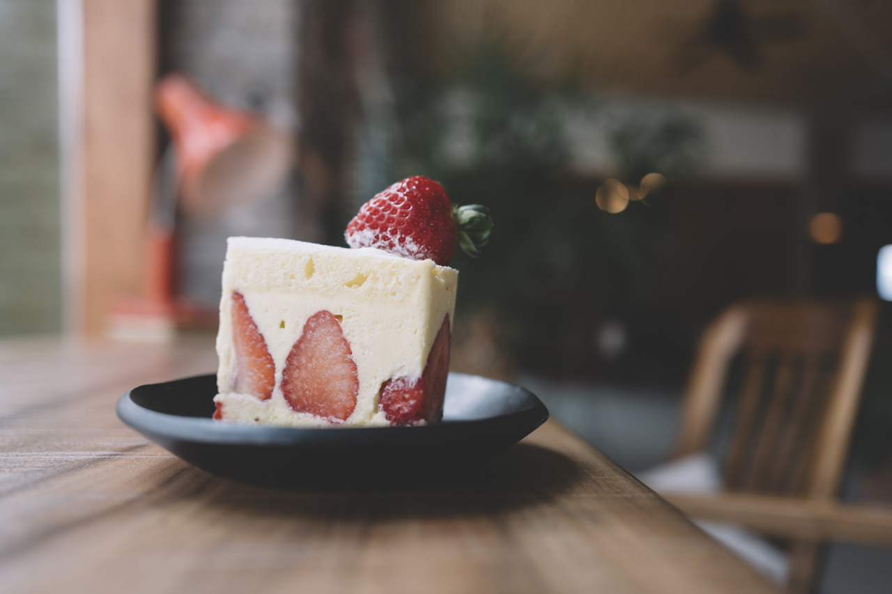

I don’t love you as if you were a rose of salt, topaz,
or arrow of carnations that propagate fire:
I love you as one loves certain obscure things,
secretly, between the shadow and the soul.
I love you as the plant that doesn’t bloom but carries
the light of those flowers, hidden, within itself,
and thanks to your love the tight aroma that arose
from the earth lives dimly in my body.
I love you without knowing how, or when, or from where,
I love you directly without problems or pride:
I love you like this because I don’t know any other way to love,
except in this form in which I am not nor are you,
so close that your hand upon my chest is mine,
so close that your eyes close with my dreams. — Pablo Neruda, "One Hundred Love Sonnets: XVII"


{kind=link}
{kind=link}
{kind=link}
{kind=link}
{kind=link}
{kind=link}
![ When I have baked white cakes And grated green almonds to spread upon them; When I have picked the green crowns from the strawberriesAnd piled them, cone-pointed, in a blue and yellow platter;When I have smoothed the seam of the linen I have been working;What then?To-morrow it will be the same:Cakes and strawberries,And needles in and out of cloth. If the sun is beautiful on bricks and pewter,How much more beautiful is the moon,Slanting down the gauffered branches of a plum-tree;The moon, Wavering across a bed of tulips; The moon,Still,Upon your face.You shine, Beloved,You and the moon.But which is the reflection?he clock is striking eleven.I think, when we have shut and barred the door,The night will be darkOutside. — Thomas EdisonAmy Lowell, "Interlude"](img/songs/songs17.jpg){kind=link}
{kind=link}